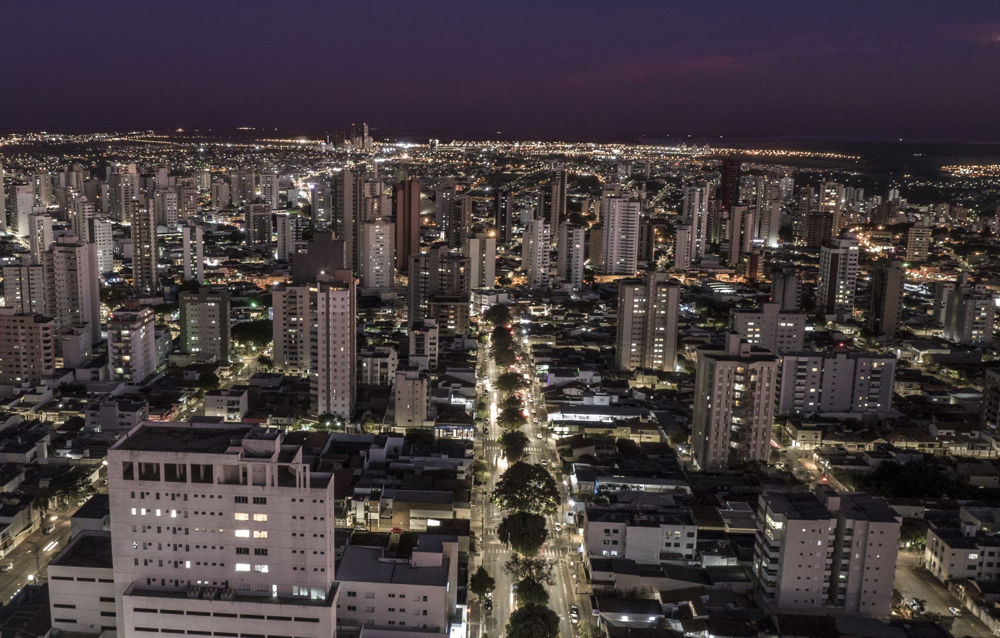
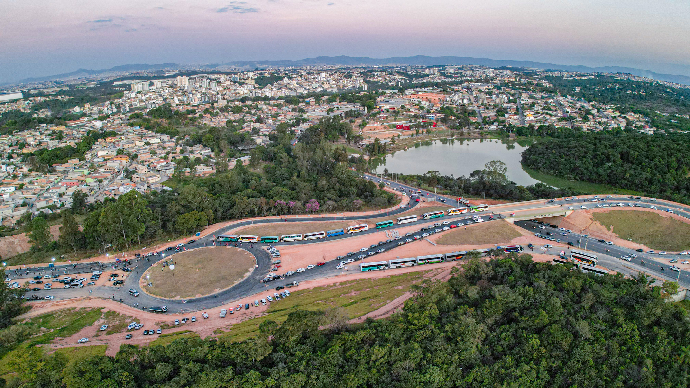
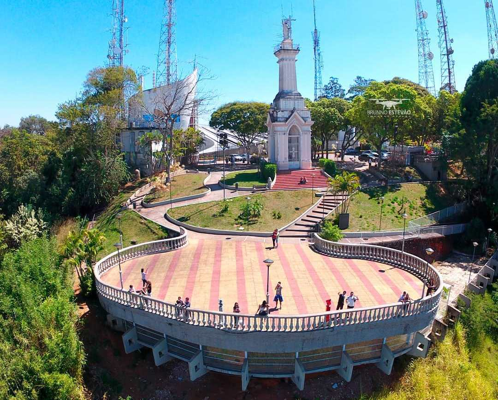
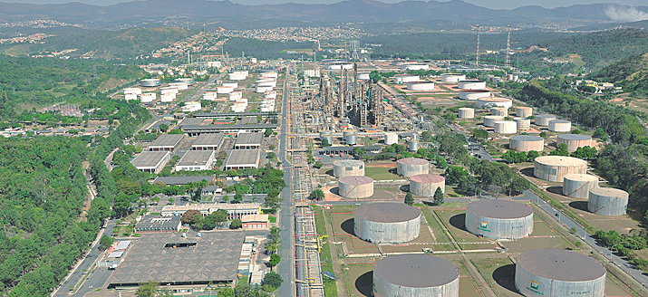

1. Belo Horizonte
Belo Horizonte é a capital do estado e um importante centro administrativo, econômico e cultural.
População: ~2,5 milhões
2. Uberlândia
Uberlândia tem forte presença no agronegócio e no setor de serviços.
População: ~711 mil
3. Contagem
Contagem faz parte da Região Metropolitana de BH, com grande foco industrial.
População: ~673 mil
4. Juiz de Fora
Juiz de Fora é um importante polo regional, com destaque para educação e serviços.
População: ~586 mil
5. Betim
Betim, também na Região Metropolitana de BH, abriga grandes indústrias, incluindo a Fiat.
População: ~450 mil
